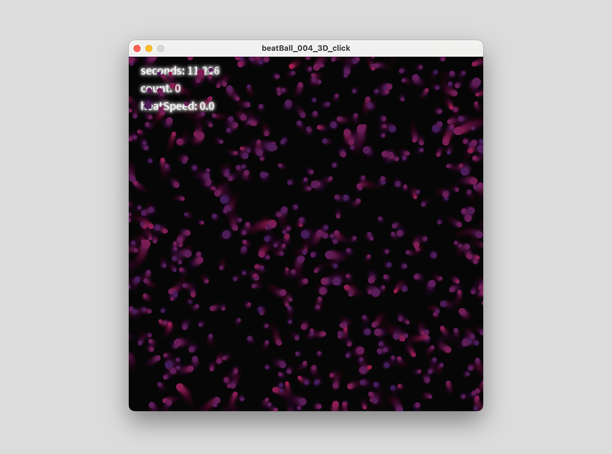
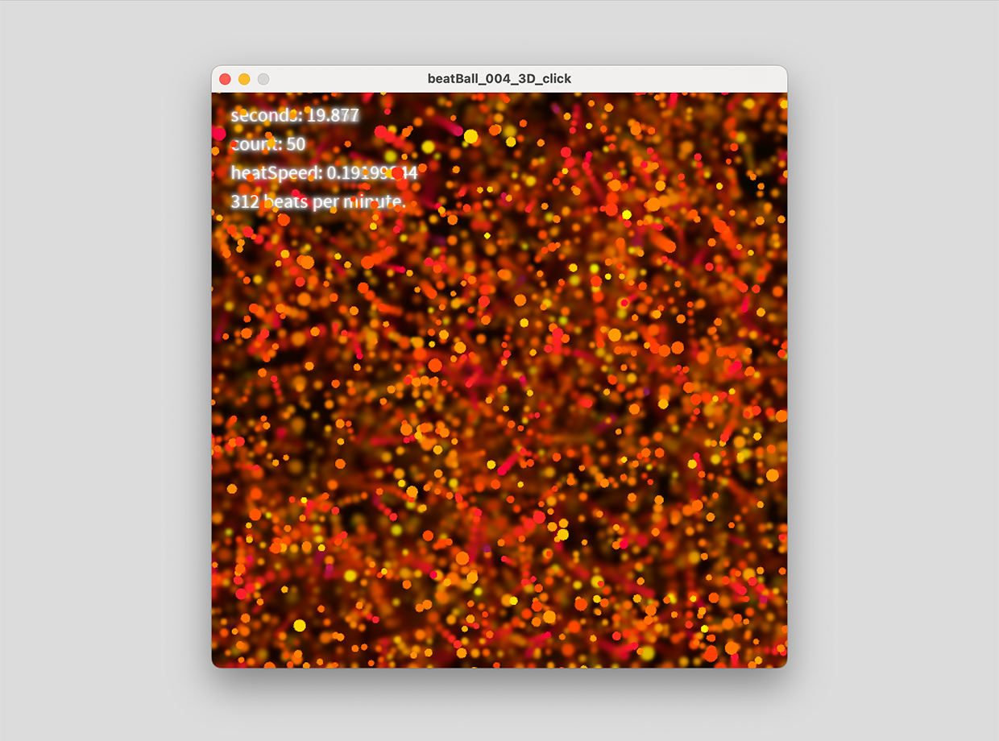

心拍のビジュアライゼーション
使用技術：Processing、Arduino
心拍の情報の可視化が課題の授業で、ArduinoとProcessingを用い、データのビジュアライゼーションを行いました。

心拍を検知していない時の画面

心拍を検知すると加速度が与えられ、速度に応じて色が変化する
作品概要
Arduinoに接続したパルスセンサーで心拍の情報を検知し、その情報をProcessingに送り、可視化を行いました。
制作意図
心拍の可視化ということで、血中に漂う赤血球をイメージしました。 脈がなるごとに、赤血球に力が働き、動き出します。そしてその後は抵抗を感じ、徐々に減速していきます。
工夫した点
- うようよ動く赤血球の、有機的な動き
- 脈がくる時、加速度の他に色の明度を上げ、視覚的にわかりやすくした。
- パーティクルの数、大きさ、色を何度も変更し、わかりやすさを出した